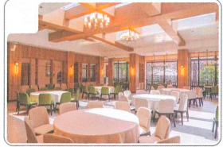
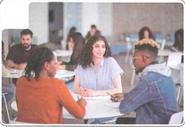
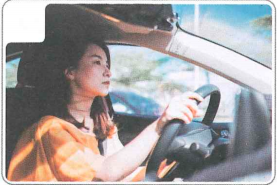
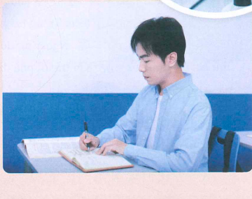
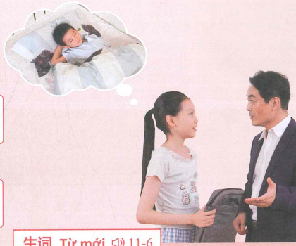
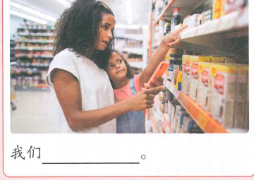
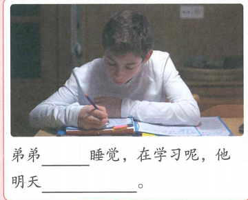

我读大学呢
Em đang học đại học
Từ mới → bài khóa → ngữ pháp → luyện tập, chia theo từng cụm nhỏ.
Khởi động
Nhìn hình và chọn từ phù hợp.

🍽️ Đây là đâu?

🎓 Người trong hình?

🚗 Hoạt động?
Cụm 1 · Từ vựng
7 từ trước Bài khóa 1.
Bài khóa 1 · 找饭店
Role-play
Gọi điện hỏi một người đang trên đường: đang ở đâu, đang làm gì, đi bằng phương tiện nào.
Ngữ pháp 1 · Câu hỏi chính phản
Cấu trúc với động từ
它是不是在超市后边？
你去没去学校？
你开车没开车？
Cấu trúc với tính từ
这件衣服好看不好看？
你们学习忙不忙？
这本书贵不贵？
✏️ Luyện nhanh
Cụm 2 · Từ vựng
6 từ trước phần nghe Bài khóa 2.
Nghe trước Bài khóa 2
🎧 Nghe hội thoại hai lượt rồi chọn đáp án đúng
Bài khóa 2 · 我读大学呢

Ngữ cảnh: hai người trò chuyện sau khi gặp nhau tại nhà hàng.
Ngữ pháp 2 · 在 / 正在 biểu thị hành động đang diễn ra
Ba hình thức
我正在看电视。
学生们正在上课呢。
我们读书呢。
Phủ định
我没看电视，我在学习呢。
我没买菜，买水果呢。
✏️ Luyện nhanh
Cụm 3 · Từ vựng
12 từ cuối trước Bài khóa 3.
Nghe trước Bài khóa 3
🎧 Nghe hội thoại hai lượt rồi chọn đáp án đúng
Bài khóa 3 · 弟弟还在睡觉

Ngữ cảnh: sáng thứ Bảy, người bố hỏi con gái về em trai trước khi ra ngoài.
Ngữ pháp 3 · Động từ năng nguyện 要
Cấu trúc
他今天要和小朋友玩。
妈妈要去超市。
白家月要在家里学中文。
Ý nghĩa
要 đặt trước động từ để diễn đạt mong muốn hoặc dự định làm một việc gì đó.
Mẹo: học nguyên cụm 要 + V: 要去、要玩、要学习。
✏️ Luyện nhanh
✏️ Luyện tập tổng hợp
Ôn lại từ vựng và ba điểm ngôn ngữ chính.


✅ Tổng kết
Bài 11 đã hoàn thành
- 25 từ mới, chia thành 3 cụm.
- 3 bài khóa với audio do giáo viên cung cấp.
- Nút Play + Pause ở mỗi phần nghe.
- Câu hỏi chính phản: V + 不/没 + V; Adj + 不 + Adj.
- 在 / 正在 + V (+ 呢), và V + 呢.
- 要 + V để diễn đạt mong muốn hoặc dự định.
Điểm luyện tập tổng hợp
Chỉ tính 6 câu ở phần luyện tập tổng hợp.